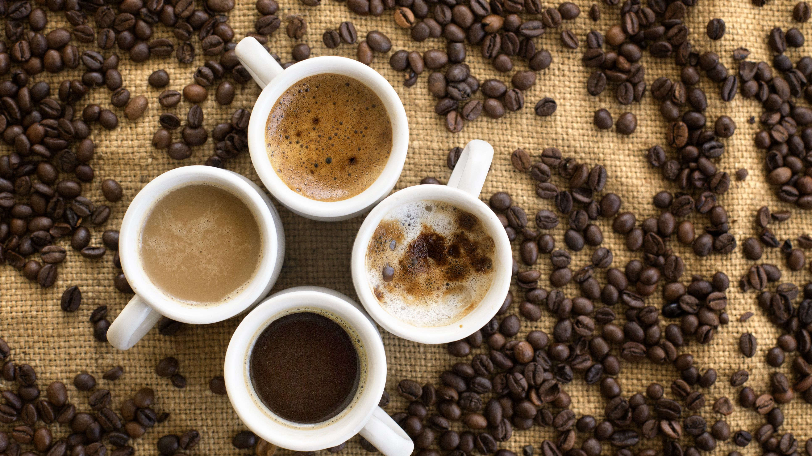

DREW BEANS Co.
Drink Coffie, Live For Ever!!
Coffee tastes better
when it is strong!Do you agree?
A 2017 review of clinical trile found that drinking coffie is genarally safe with in usual level of
intake and is more likely to improvehealth outcome than tocource harm doses of 3 or 4 cups of coffee daily.
Exception include posssible increased risk in women having bone fractures, and a possible increased risk in
pregnant women of fetal loss or decreased birth wieght. Results were complecated by poor study quality, abb=nd
diffrence in age, genter, health status, and serving size.
TYPES
Coffee beans are the seed of fruit called a coffee cherry. Aoffee cherries grow on coffee trees from a genus if
plants called coffea.There are a wide verityof species of coffee plants, ranging from shrubs to trees.
Type of bean:thre are two main type of coffee species, Arabica and Robesta. Arabica originate from
Ethiopia and produces a mild, flaverful tasting coffee. It's the most populer type world wide . how ever, it's
expencove to grow becouse the arabic plant is sensitive to the enviorlment, requring shade ,humidity and stady
temperature between 60-75 degree fahrenheut. The Robests coffee plant is more economical to grow becouse it is
resist to desise and servives in awider range of temperature between 65-97 degree fahrenhit. It can also
withstand harse climate changes such as variation in rainfall and strong sunlight
Type of Rost:coffie beans start out green.They are rosted at a high heat to produce a chemical change
that relise the rice aroma and flavour that we assosiate with coffiee.They are then cooled and ground for
brewing. Rosting levels ringe from light to medium to dark. The lighter to roadt,the lighter the colour and
rosted flavour and the higher its acidity. dark rosted produce a vlack beans with little acidity and a bitter
rosted flavour. The populer french rost is medium-dark
Type of grind:A medium grind is the most commen and used used for automatic drip coffee makers. A fine
grind is used for deeper flavour like espresso, which releases the oils, and a coarse grind is used in coffee
presses
Decaffeinated coffee:This is an option for those whoexperiance unpleasant side effects from coffeine.The
two most commen methode used to remove coffine from coffiee to apply chemical solvents(metholine cloride or
ethyl acetate)or carben deoxide gas. both are applied to steamed or soaked beans, which are then allowed to dry
. The solvent bind to coffine and both avoporate when the beans are rainsed and /or dried. According to U.S
regulation, at least 95% of the cppffine must be removed to carry the decaffeinated lable, so thre may be trace
residual amounts of caffine.Both methode may couse some loss of flavour as other naturally occurring chemicals
in coffee beans that impart their unique flavour and scent may be disroyed during processing.
TOP BRANDS
1)STARBUCKS:The brand is not known for sourcing and roasting the best coffie beans. Most of their
cofee beans
are
dark roasted, meaning, they tast bitter. And many consumer, Who know their cofee, complain that
starbucks coffee has a distinct burnt taste.
2)DUNKIN' DOUGHUNTSDunkin is not as big a brand as starbuks but they are second in line in the
number of stores. But yes,
the coffee dunkin offer is surely shomewhat superior to starbucks. For instance, Dunkin dose not have
the signature burnt Ullam, optio. taste in coffee as starbucks dose. The coffie is also cheper
3)Costa CoffeeCosta coffee is one of the largest coffee chains in Britain. Having its presence
in more than 31
countries
worldwide, it has more than 3000 outlets serving coffee with around 18 thousand branches in the
whole world.
4) McCafé
Owned by McDonald's, McCafe is one of the leading coffee chains in countries like Australia and
New
Zealand. McCafé enjoys the benefit of having a vast presence (Because let's face it, McDonald's
is
everywhere!) As McDonald's expands worldwide, there is a decent chance of McCafé doing the same.
5) Peet's Coffee
Peet's coffee is said to be fairly stronger than the coffee Starbucks serves so it might not be
for
everyone. Peet's has a long history of serving darker roasted Arabica coffee. The coffee
supposedly
has a variety of flavours .
GALLERY
